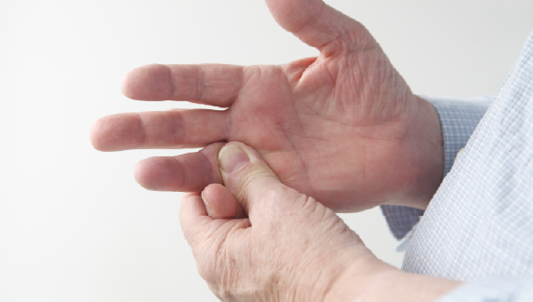

Suh Seungpyo Orthopaedic Clinic 수부질환 수술
손목터널증후군
정중신경 압박으로 2/3/4번째 손가락의 일부가 저린 현상이 나타나며 초기 물리치료, 약물치료, 주사요법과 같은 보존적 치료법에도 상태호전이 없거나 신경통증이 심할 경우 수술적 치료 방법이 필요할 수 있습니다.

방아쇠수지
손가락을 굽히는 힘줄이 주변과 마찰로 인해 염증이 생기면서 통증이 발생하는 질환으로, 주요 발생 부위는 3, 4번째 손가락입니다. 약물, 주사 및 물리치료 효과가 미미한 경우 반복적인 주사는 부작용과 합병증의 위험성이 있기 때문에 수술적 치료를 필요로 합니다.
수부질환 수술 방법
정중신경을 누르는 인대 및 굽힘 힘줄 주변의 마찰을 발생시키는 원인을 제거함으로써 통증을 해결합니다.